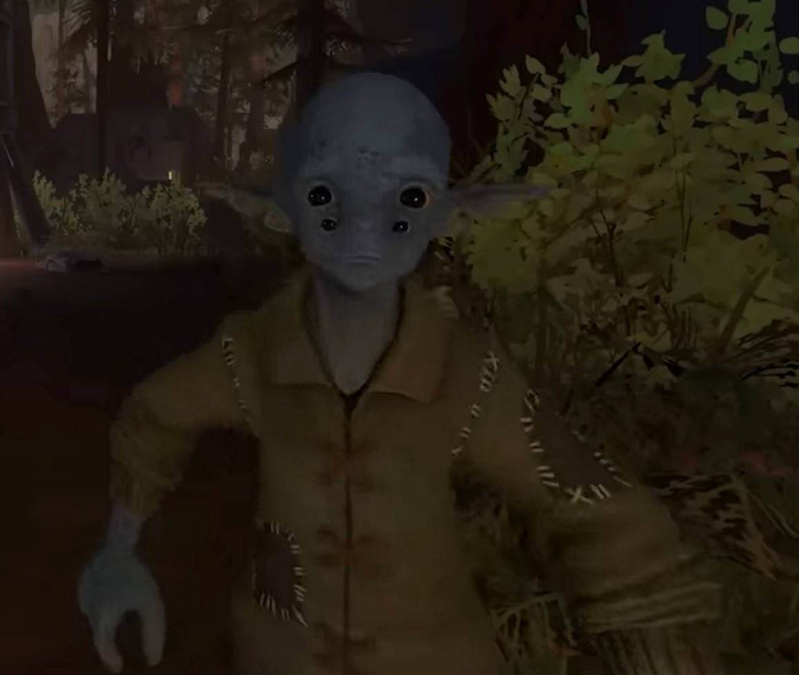
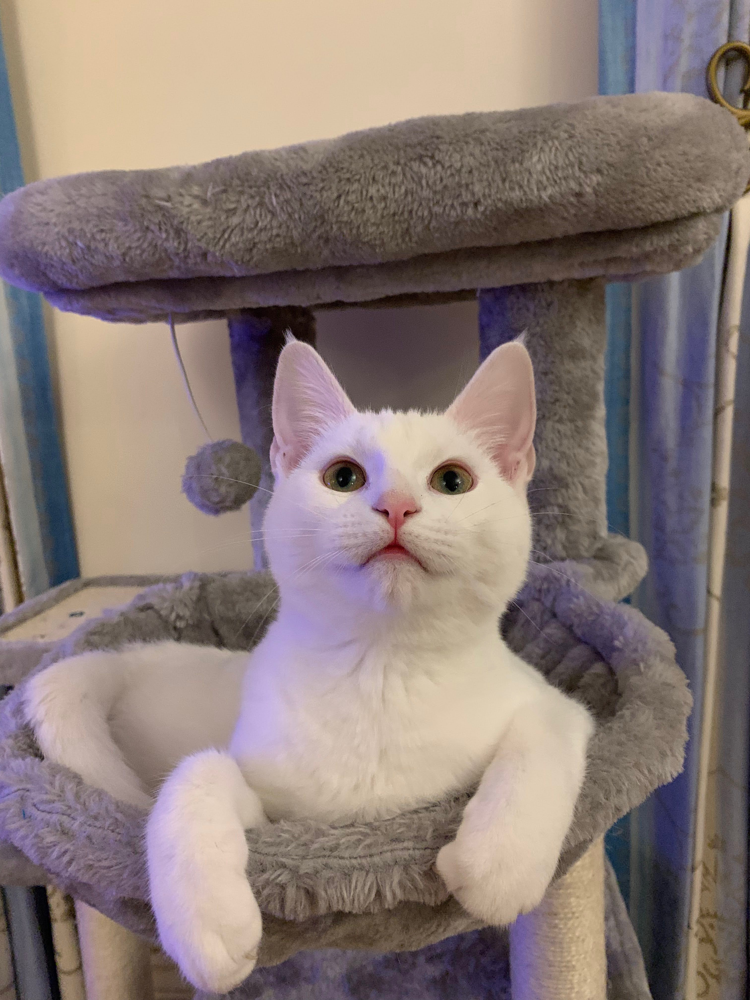

About Me!
Games Designer and Programmer
Hi! I'm Jacob, a Games Design and Programming student currently studying at the University of Staffordshire.
I love being able to make new and unique experience for people, and hope to be able to create games that will change people's lives just like my favourites games have to me!
My favourite game by far is Outer Wilds!
It has greatly inspired me with the way it can spark curiosity and wonder in the player in such a natural way. I recommend it to every kind of person, just don't look up any spoilers!
Other games that I love are Bugsnax, Wandersong, Night in the Woods!
I love the cosy vibes of these games and how they can often weaponise those vibes to take the player off guard with shocking moments!
I also love Magic: The Gathering and Dungeons and Dragons 5e, games that allow me to express my creativity through character creation and deckbuilding.
These games are able to make unexpected moments that I will never forget, and helped me find community and friends through the world of gaming!
When I'm not playing or making games you might find me with my cat Evie! I also enjoy creating Youtube videos and short films with my friend, going to conventions and collecting physical editions of my favourite games!